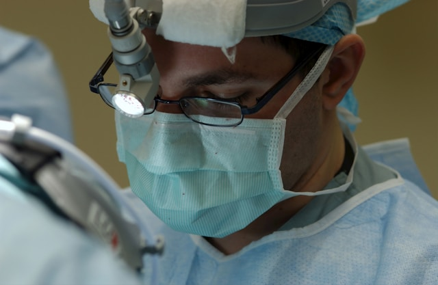
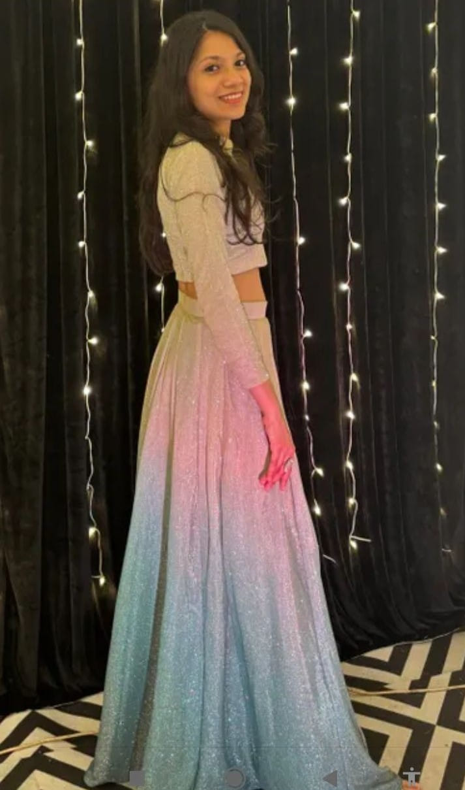

Endorsement for Phaco-Refractive & Advanced Anterior Segment Fellowship
Dr. Vishram Sangit — Chief of Ophthalmology & Senior Cataract Surgeon, Jupiter Hospital, Thane
"Dr. Sneha Jain displays exceptional tissue handling, intraoperative composure, and structural precision in the operating room. As our pioneering resident, she has consistently outperformed expectations in micro-incision cataract surgery."
Dr. Sangit has overseen Dr. Jain's primary surgical log across 3 years of residency at Jupiter Hospital. His recommendation underscores her rapid progression in phacoemulsification, clear corneal incision architecture, continuous curvilinear capsulorhexis (CCC) consistency, and post-operative outcome tracking.
- Surgical Competency: Mastered clear corneal phacoemulsification (divide-and-conquer & stop-and-chop) and manual SICS in dense cataracts.
- Clinical Leadership: Played an instrumental role in establishing standardized pre-operative OPD protocols and surgical logbooks for the department.
- Fellowship Assessment: Strongly recommended for high-volume phaco-refractive fellowship training, citing her dedication to spectacle independence and refractive outcomes.

